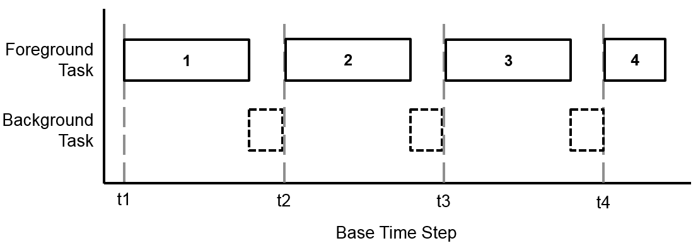

External Mode
External mode enables Simulink® on your host computer to communicate with the deployed model on your hardware board during runtime.
The external mode operation described here applies to the following hardware support packages:
For all other hardware support packages, refer to Host-Target Communication with External Mode Simulation (Simulink Coder).
How External Mode Works
External mode creates a communication service on the host computer and hardware board. The two services establish a communication channel between the Simulink engine and generated code deployed on the hardware board. The communication service isolates the model process on the hardware board from the code and from the transport layer that formats, transmits, and receives the data packets. The communication service on the host computer receives the data packets through the transport layer and updates the Simulink model display. The diagram shows the connection that the external mode communication service creates between Simulink on the host computer and the deployed code on the hardware board.
The communication service used in external mode can be a Foreground Task within the model thread or exist in a Background Task.
The task descriptions that follow assume Modeling for Single-Tasking Execution (Simulink Coder). They can also be applied to Modeling for Multitasking Execution (Simulink Coder), where the background task containing the external mode executes with the lowest priority.
Foreground Task
As a foreground task called after each execution step model, the external mode collects data at the base rate of the model.
This diagram shows the typical execution of the external mode relative to the model code.
Executing after each model time step maintains the integrity of the data logged by the external mode from the hardware board.
When model code consumes most of the execution time for each time step, the external mode execution overruns into the next time step. This delays the start of the next model execution step and degrades the real-time behavior of the deployed model. The following diagram shows an overrun of the external mode into the next time step due to model code execution time.
As a result of this overrun, in deployed models where data logging takes priority over real-time execution, configure external mode to operate as a foreground task.
Background Task
External mode can be configured to operate as a background task on your hardware. As a background task, external mode uses the execution time between the model code completing in one time step and starting in the next time step. By not blocking the model step, external mode can be used in systems that require real-time execution. This external mode configuration enables direct observation of the deployed model on the hardware board as it would behave in standalone operation.
The following diagram shows the execution of the model and background task.

When model code consumes most of the execution time for each time step, the external mode in the background task gets starved for execution time. Without sufficient time to collect and transmit data from the hardware board to the host computer, data packets get dropped by the external mode, resulting in gaps in the data logging.
As a result of these potential gaps, in deployed models where real-time execution takes priority over data logging, configure external mode to operate as a background task.
Enable External Mode
From the Simulink Editor toolbar, select
External.This selection turns on generation of code to support external mode communication between Simulink and target systems.
In the Simulink Editor, select Simulation > Model Configuration Parameters.

In the Configuration Parameters dialog box, click Hardware Implementation and select your Hardware board.
Note
This step overwrites the Model Configuration Parameters. To preserve the configuration of an existing model, select File > Save As to create a working copy of the model that you can configure.
(Optional) Under Target Hardware Resources, click External mode to view the commonly used parameters.
(Optional) Select Run external mode in a background task to force the external mode task to operate as a background task.
See Also
Decide How to Visualize Simulation Data
Related Topics
- Modeling for Single-Tasking Execution (Simulink Coder)
- Modeling for Multitasking Execution (Simulink Coder)